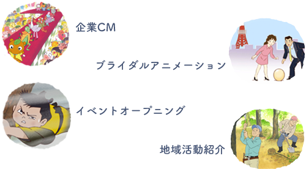
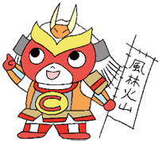
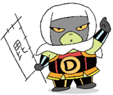
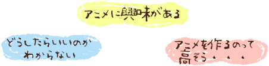
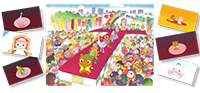
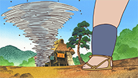
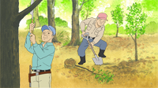
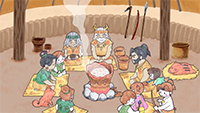

|  |
|
|
 |

まずはお気軽にお問い合わせください。
ご希望に沿えるかたちを一緒に模索させていただきます。

「ドラえもん」「怪物くん」の作画監督・本多俊行が担当します。
|  | キャラクターPR（95秒） |
ブライダルアニメーション（約3分半） |
|
|  | イベントオープニング（約3分半） |
|  | 地域紹介アニメーション（10分程度） |
|  | 地域紹介アニメーション（約10分半） |